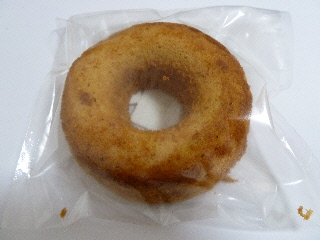
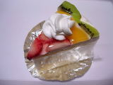

にしこおり洋菓子店の焼きドーナッツ
2011/01/11
塩冶のホックで買いました。
キャラメル味の焼きドーナッツです。

焼きドーナッツって流行っていて、色んなお店の商品がありますね。
ここのはなんとなくベビーカステラ風かな？って思いました。
スーパーだと気軽に1個買えていいですね。焼きドーナッツは全部で3種類販売していたので、他の種類も食べてみたいです。
島根県出雲市高岡町595-1
閉店しました。
2011/01/11
塩冶のホックで買いました。
キャラメル味の焼きドーナッツです。

焼きドーナッツって流行っていて、色んなお店の商品がありますね。
ここのはなんとなくベビーカステラ風かな？って思いました。
スーパーだと気軽に1個買えていいですね。焼きドーナッツは全部で3種類販売していたので、他の種類も食べてみたいです。
2008/12/18
パラオに行ったんですが、ケーキ屋さんの「にしこおり」が営業していませんでした。
他のお店（シュブスタンスだったかな？）のチラシが貼ってあったので、撤退されたかもしれませんね。
2008/01/03
スライスされたフルーツが乗ってて、ちょっと派手目なケーキでした。

スライスが上にあるだけなのでそんなにフルーティーさはなかったです。
ふんわりとしたスポンジやクリームの甘さはしっかりありました。大きめなサイズのケーキなので食べ応えがあっていいですね。